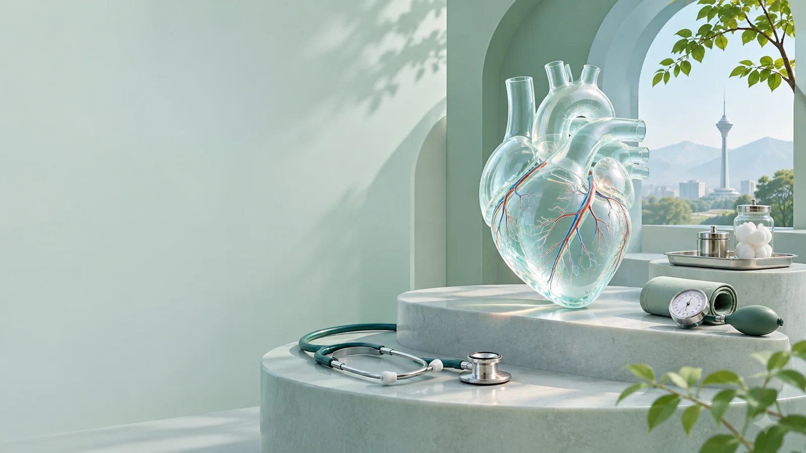

وقت کافی برای گوش دادن،
دقت کافی برای درمان.
در سوسن هر ویزیت حداقل سی دقیقه است. پزشک داخلی، متخصص قلب و دو دندانپزشک زیر یک سقف کار میکنند و پروندهی شما بین همهشان یکی است.
- ۴ پزشک متخصص
- ۱۲ سال در سعادتآباد
- ۰ تماس تلفنی برای نوبت
خدمات و تعرفه
قیمتها حدود شروع هر خدمتاند و بعد از معاینه نهایی میشوند. بر اساس نیازتان فیلتر کنید یا نام خدمت را جستوجو کنید.
خدمتی با این مشخصات پیدا نشد. عبارت دیگری را امتحان کنید یا دستهبندی «همه» را بزنید.

قلب را قبل از علامت دادن بسنجید
نوار قلب، اکو و ویزیت متخصص در یک مراجعه انجام میشود و گزارش همان روز به صورت مکتوب به شما میرسد. بدون رفتوآمد بین چند مرکز.
پزشکان کلینیک
هر پزشک روزهای مشخصی حضور دارد. نزدیکترین نوبت خالی هر کدام را همینجا میبینید و با یک کلیک رزرو میکنید.
رزرو نوبت
چهار انتخاب ساده و دو فیلد اطلاعات. نوبت شما فوراً در همین دمو ثبت میشود و به هیچ سروری ارسال نمیشود.
نوبت نمایشی ثبت شد
کد پیگیری:
این یک دموی نمایشی است؛ پیامکی ارسال نمیشود.
ساعت کاری و نشانی
در حال بررسی ساعت کاری…
| روز | ساعت |
|---|
تهران، سعادتآباد، خیابان سرو غربی، پلاک ۱۸، طبقهی دوم
ساعتها و نشانی در این دمو فرضیاند. وضعیت «باز» بر اساس ساعت تهران محاسبه میشود.
پرسشهای رایج
با بیمههای تکمیلی طرف قرارداد کلینیک میتوانید هزینه را به صورت مستقیم تسویه کنید. لطفاً کارت بیمه و کارت ملی را به همراه بیاورید. فهرست بیمهها هنگام پذیرش به شما اعلام میشود.
تا ۱۲ ساعت قبل از زمان نوبت، با شمارهی کلینیک تماس بگیرید یا پیامک تأیید را پاسخ دهید. لغو در این بازه هزینهای ندارد و جای شما برای بیمار بعدی آزاد میشود.
نه. فقط لباس راحت بپوشید و فهرست داروهای مصرفیتان را همراه بیاورید. اگر آزمایش یا نوار قلب قبلی دارید، نسخهی آن بسیار کمک میکند.
در ساعت کاری تماس بگیرید. هر روز چند نوبت اورژانسی برای درد و عفونت نگه میداریم. روزهای تعطیل، مراکز اورژانس دندانپزشکی شهر پاسخگو هستند.
بله، با اجازهی خود شما. اگر مثلاً داروی ضدانعقاد مصرف میکنید، دندانپزشک پیش از جراحی از آن مطلع میشود. میتوانید هر زمان این دسترسی را محدود کنید.